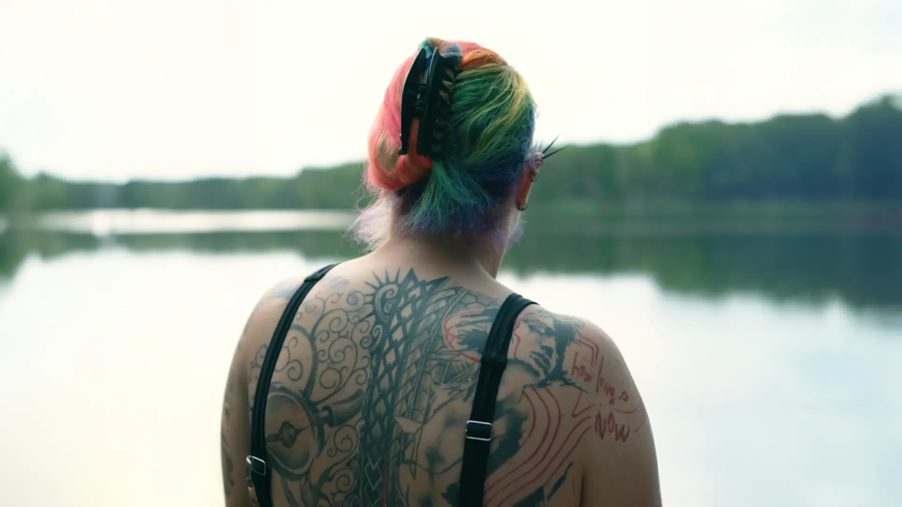
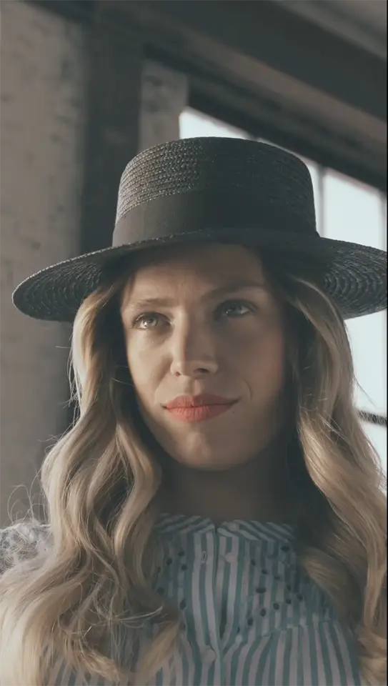
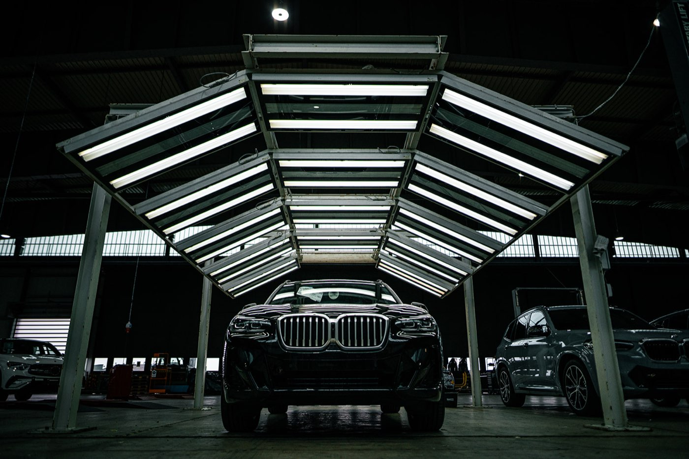
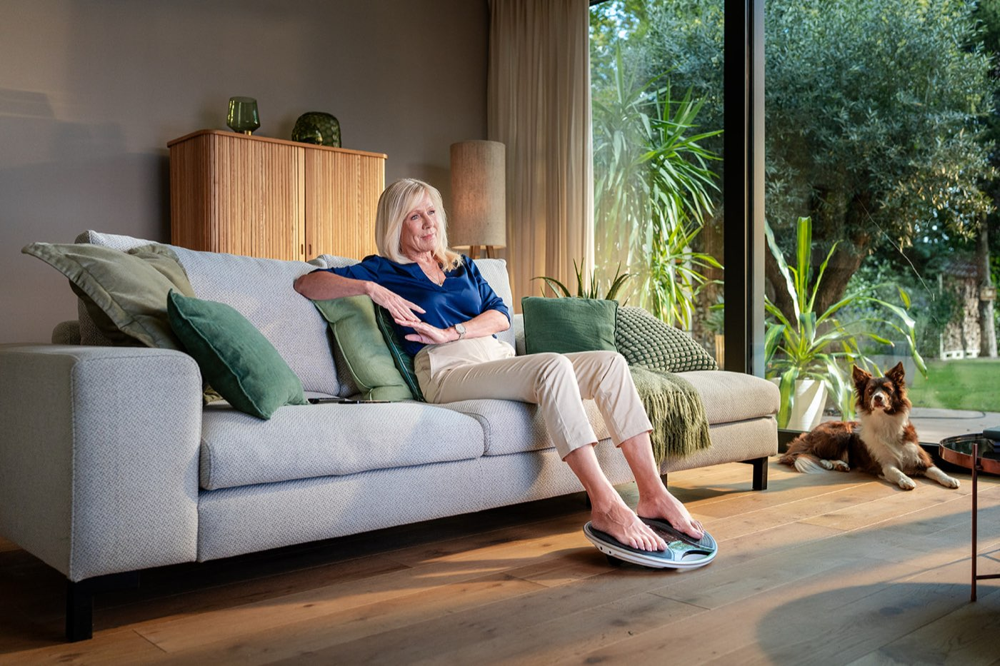
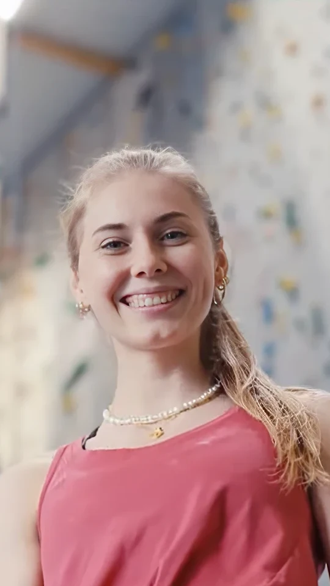
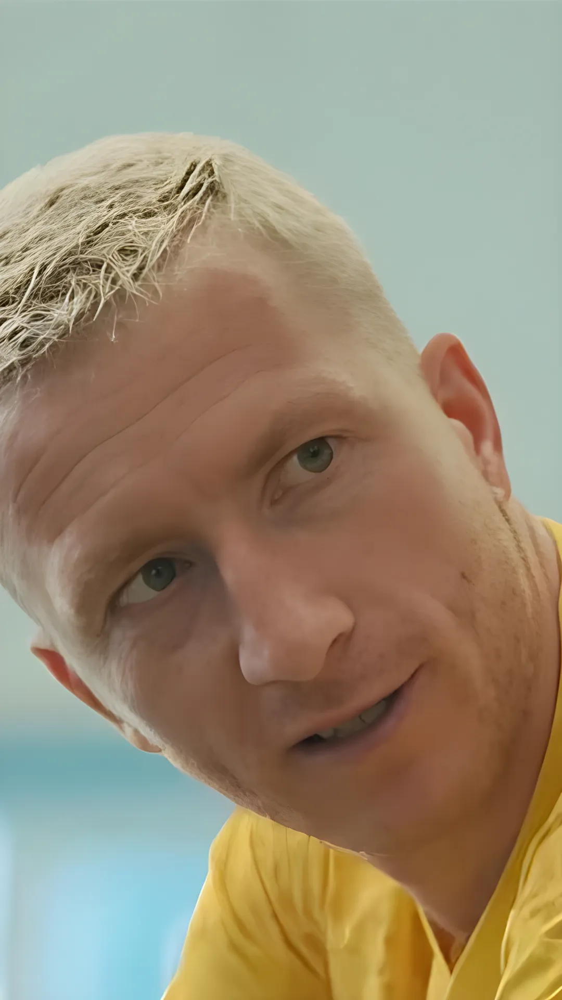
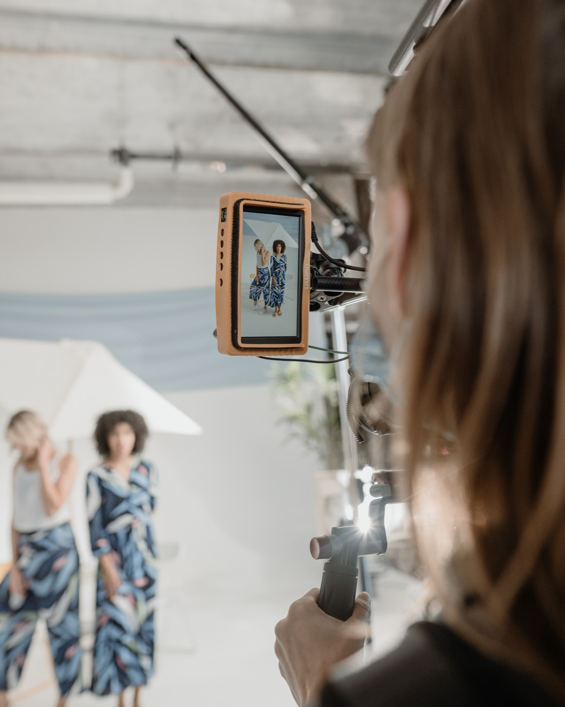
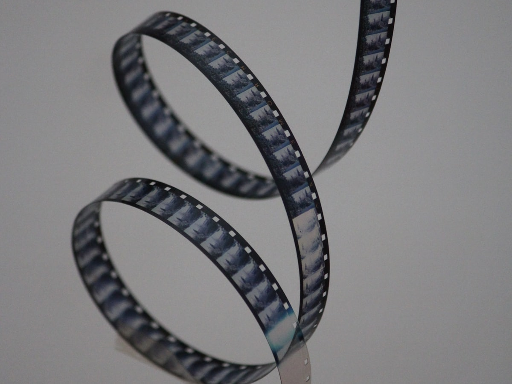
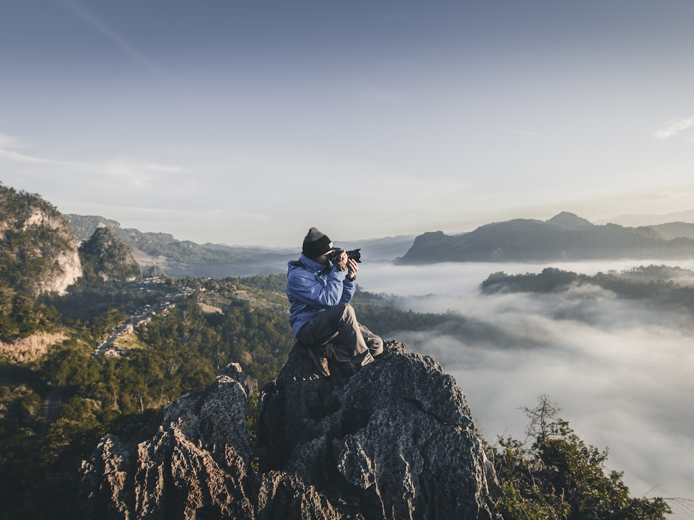

Neueste Arbeit: Siemens Work Info ContactBrand Content worth watching — Visual Content Studio, Köln





Video & Idee & Konzept & Foto — Le Werk ist spezialisiert auf Storytelling, Film und Foto für Social und Branded Content.
Dig deeperContent darf gut aussehen.

Video(6)
Vertikale und horizontale Formate. Komplett aus einer Hand. Visuell ansprechend, mit inhaltlicher Tiefe und Auge fürs Detail. Für Kampagne und organischen Content.

Idee & Konzept(3)
Wo wir einsteigen, entscheidet ihr. Entweder setzen wir eure fertigen Ideen um. Oder wir kommen schon früher mit an Board und übernehmen die Ideenentwicklung und Konzeptarbeit. Es muss erst ein Fundament geschaffen werden? Gerne fangen wir bei der Content Strategy an.

Foto(2)
Aus derselben Produktion wie Video oder als eigener Shoot. Fotografie und Nachbearbeitung für Content, Kampagne, Event oder Marke.
Hochwertig produzierte Visuals in Bild und Bewegtbild — mit den Maßstäben an Licht, Bildgestaltung und Postproduktion, wie man es aus der Filmproduktion kennt.
Redaktionelle Tiefe, ehrlich erzählte Geschichten, menschliche Momente. Interviewbasiert und dokumentarisch, mit Blick für Charaktere.
Marken müssen dort sichtbar sein, wo die Aufmerksamkeit ihrer Kunden liegt. Wir denken social first und produzieren den richtigen Content für die richtigen Kanäle.
Concept · Creative Director
Head of Production · Self-Shooting Director
Head of Post-Production · Photographer
Producer · Content Creator
Wir kombinieren ein schlagkräftiges Kernteam mit kreativen Spezialisten aus verschiedenen Feldern.
Unsere Räumlichkeiten liegen im Krafthaus, im Rheinauhafen. Gedreht wird in Köln, bundesweit oder auch international.
Das hängt an Drehtagen, Team und Formatumfang. Kompakte Social-Produktionen starten im mittleren vierstelligen Bereich, größere Kampagnen liegen fünfstellig. Nach einem 20-minütigen Gespräch bekommt ihr eine belastbare Spanne — kein Zahlenraten.
Nein. Das ist ein anderer Markt mit anderen Preisen und anderem Anspruch. Bei uns entstehen Visuals auf Kampagnenniveau — auch dann, wenn sie am Ende vertikal im Feed laufen. Wer schnellen, günstigen Durchsatz sucht, ist bei uns falsch.
Ja, das ist der Kern unserer Arbeitsweise. Wir planen Sets so, dass bewegte und stehende Bilder parallel entstehen. Das spart einen kompletten Produktionstag und sorgt dafür, dass Foto und Video wie eine Kampagne aussehen — nicht wie zwei.
Weil dort die Aufmerksamkeit liegt. Ein Bildaufbau, der als 16:9 entsteht und später hochkant beschnitten wird, verliert immer — Blickführung, Text und Rhythmus stimmen dann nicht mehr. Wir planen umgekehrt: vertikal als Kern, Landscape und Stills als Ableitung derselben Produktion.
Für eine kompakte Produktion rechnet mit drei bis vier Wochen: eine Woche Konzept, ein bis zwei Drehtage, ein bis zwei Wochen Post. Bei laufenden Content-Paketen verkürzt sich das deutlich, weil Setup und Look bereits stehen.